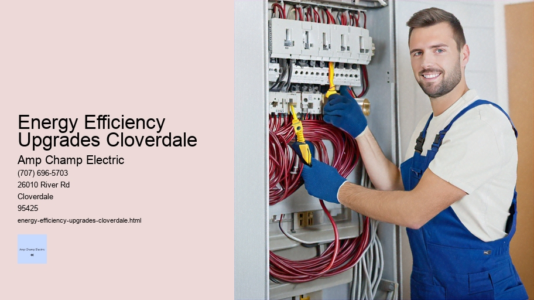

News
Electrical Installation Healdsburg
Electrical Installation Healdsburg
Electrical Installation Santa Rosa
Electrical Installation Cloverdale
Electrical Installation Geyserville
Electrical Installation Windsor
Maintenance and Repair Services Healdsburg
Maintenance and Repair Services Healdsburg
Maintenance and Repair Services Santa Rosa
Maintenance and Repair Services Cloverdale
Maintenance and Repair Services Geyserville
Maintenance and Repair Services Windsor
Electrical Safety Inspections Healdsburg
Electrical Safety Inspections Healdsburg
Electrical Safety Inspections Santa Rosa
Electrical Safety Inspections Cloverdale
Electrical Safety Inspections Geyserville
Electrical Safety Inspections Windsor
Energy Efficiency Upgrades Healdsburg
Energy Efficiency Upgrades Healdsburg
Energy Efficiency Upgrades Santa Rosa
Energy Efficiency Upgrades Cloverdale
Energy Efficiency Upgrades Geyserville
Energy Efficiency Upgrades Windsor
Specialty Electrical Services Healdsburg
Specialty Electrical Services Healdsburg
Specialty Electrical Services Santa Rosa
Specialty Electrical Services Cloverdale
Specialty Electrical Services Geyserville
Specialty Electrical Services Windsor
About Us
Contact Us

Energy Efficiency Upgrades Cloverdale
Power Factor Correction
Title: Embracing Energy Efficiency Upgrades for a Sustainable Future
In the dawn of the 21st century, humanity stands at a crossroads where every decision we make profoundly impacts our environment and the legacy we leave for future generations. One of the most critical choices in this regard is how we manage and consume energy within our homes, workplaces, and communities. This essay delves into the importance of energy efficiency upgrades, exploring their benefits not only for our wallets but also for our planet.
Energy efficiency upgrades refer to any changes made to buildings, systems or appliances that reduce energy consumption without sacrificing performance. Such upgrades can range from installing LED lighting or high-efficiency heating and cooling systems to adding insulation or upgrading windows and doors. The overarching objective is to use less energy to achieve the same or better level of comfort and service.
The reasons for undertaking these upgrades are compelling. Firstly, they represent a significant step towards mitigating climate change. Buildings account for approximately 40% of global energy usage, with a substantial proportion wasted through inefficiencies.
Energy Efficiency Upgrades Cloverdale - Electrical Troubleshooting
Electrical Repair
Electrical Troubleshooting
Electrical Code Compliance
Electrician Training and Certification
Timer Switches
Smoke Detector Installation
By enhancing energy efficiency, we can dramatically reduce greenhouse gas emissions that contribute to global warming.
Secondly, there is an undeniable economic benefit to be reaped from embracing these upgrades. Reduced energy consumption translates directly into lower utility bills – savings that accumulate over time and offset initial investment costs. Moreover, as energy prices continue to fluctuate unpredictably, improved efficiency serves as a buffer against market volatility.
Thirdly, improving energy efficiency often results in enhanced comfort and living conditions.
Energy Efficiency Upgrades Cloverdale - Electrical Trade Schools
Electrical Industry Regulations
Fuse Box Upgrade
Electrical Trade Schools
Electrical Repair
Electrical Troubleshooting
Electrical Code Compliance
Electrician Training and Certification
For example, better insulation maintains indoor temperatures more consistently while reducing noise pollution from outside sources. Similarly, modern efficient appliances tend to operate more quietly and offer superior functionality compared to their older counterparts.
Beyond individual benefits lies a broader societal impact; increasing demand for efficient technologies spurs innovation in sectors ranging from manufacturing to services. This innovation leads not only to more advanced products but also generates employment opportunities within green industries – an important consideration as economies look toward sustainable growth models.
However, despite its advantages, some barriers hinder widespread adoption of these upgrades—financial constraints being chief among them. The upfront cost of installing new equipment can be prohibitive for many homeowners and small businesses alike; therefore establishing financial incentives such as rebates or tax credits could serve as catalysts for investment in efficiency measures.
Education plays another crucial role—many individuals simply aren't aware of potential savings or don't understand which investments yield the highest returns on energy saved over time. Community programs designed to inform citizens about their options along with easy access to professional assessments could demystify the process significantly.
It's important too not overlook regulatory frameworks that encourage or sometimes mandate improvements in building codes and appliance standards — two powerful levers by which governments can drive progress toward greater overall efficiencies across societies at large.
As much promise as technology holds when it comes down implementation human behavior remains equally important if not more so; habits like turning off lights when leaving room switching off devices instead leaving them standby mode while minor individually have cumulative effect enormous scale thus personal responsibility cannot understated part equation towards greater sustainability efforts compliment technological strides taken place front lines battle against waste excessive consumption resources finite world offers us stewardship over during brief tenure earth inhabitants collective shift mindset required alongside physical transformations landscapes inhabit daily lives intertwined destiny planet call home beckons us forward ever-greater awareness actions consequences thereof hence push towards embracing all forms effective upgrade represents logical rational necessary evolution path tread lightly upon delicate ecosystems upon depend survival thrive harmoniously coexistence myriad species including ourselves dream brighter cleaner healthier tomorrow starts today one small retrofitting project next generation thank foresight courage take steps needed ensure thrives centuries come indeed embrace challenge head-on secure future ours cherish protect nurture posterity sake own survival sheer love beauty life itself compels action now delay option afford miss out opportunity presented momentous juncture history mankind let journey begin earnest pursuit excellence realm conservation preservation respect due inheritance received pass along untarnished gloriously renewed shape form imaginable power hands wield wisely judiciously utmost care reverence owed magnificent gift been granted share joys burdens alike solidarity unity purpose vision clear let forge ahead undaunted resolve steadfast determination know right thing do wait act upholds values hold dear heart true testament character spirit endures long after gone remembered fondly revered always light way others follow shining exemplar what possible dare imagine work together common goal shared destiny triumphant conclusion awaits grasp seize day carpe diem adage goes old wisdom never relevance pertinence context discussion hand concludes reflections topic hand underscore urgency matter address speed diligence seriousness situation demands wake-up call heed respond accordingly manner expected responsible citizens globe interconnected interdependent web existence supports sustains nourishes provides endlessly wondrous opportunities explore expand horizons reach beyond stars limit dreams aspirations boundless horizon stretches infinitely possibilities abound limitless potential awaits tap reservoir ingenuity creativity harnessed proper channels directed noble causes worthy enterprise endeavor set forth embark quest ultimate realization goals objectives laid herein expounded upon detail depth substance merit attention consideration thoughtful reflection pause ponder weight implications entail significance import measure full scope grand scheme things perspective proper context frame reference guide navigate complexities challenges lie await triumphantly emerge victorious endgame sight line finish crossed victors spoils glory accolades heaped just reward tireless effort exerted tirelessly pursuit happiness contentment fulfillment deepest desires hearts content satiated longing yearning peace tranquility reign supreme utopia earth realized thanks part played each every one contributed meaningful positive impactful way lasting legacy endure eternally testament time withstand test eternity stand tall proud accomplishment achieved greatness acknowledged acclaimed far wide heralded example emulate inspire generations come aspire heights previously thought unattainable reach grasp firmly held never let go treasure cherished valued above else prize possession guarded fiercely defended tooth nail worth fighting dying defending honor privilege duty obligation incumbency incumbent perform best abilities given talent skill expertise put good use benefit all concern stakeholder involved interested party concerned vested interest outcome success venture embarked undertaken initiative launched campaign waged battle fought conflict engaged struggle endured hardship overcome obstacle surmounted challenge met adversary defeated foe vanquished enemy routed opposition quelled resistance broken will bent submission victory assured certain guaranteed forthcoming imminent arrival anticipated eagerly awaited welcome open arms embrace wholeheartedly enthusiastically zest vigor vitality enthusiasm passion zeal fervor ardor fire burning brightly beacon hope symbol aspiration ideal model pattern template blueprint guidepost signpost waypoint marker milestone event historic occasion momentous epoch-making groundbreaking earth-shattering sea-changing game-changing paradigm-shifting turning point pivotal crucial critical key decisive determinative definitive conclusive final absolute ultimate supreme paramount preeminent transcendental transformational reformative revolutionary innovative progressive avant-garde cutting-edge state-of-the-art technologically advanced sophisticated refined polished cultivated cultured enlightened educated well-informed knowledgeable wise sagacious prudent circumspect discreet judicious sober solemn grave serious earnest sincere genuine authentic original unique distinctive idiosyncratic quirky eccentric odd peculiar strange unusual weird bizarre outlandish unconventional unorthodox nonconformist maverick renegade rebel dissident heretic iconoclast individualist loner outsider misfit rogue solitary free spirit wild card dark horse sleeper surprise package bolt blue left field curveball googly knuckleball screwball slider spitball forkball changeup heater fastball cutter sinker splitter slider gyroball eephus pitch knuckler duster beanball brushback pitch chin music intentional walk balk wild pitch passed ball foul tip strikeout home run grand slam triple double single RBI stolen base caught stealing pickoff play squeeze bunt sacrifice fly error hit batsman cycle perfect game no-hitter shutout complete game save hold blown save win loss tie draw rainout postponement cancellation forfeit disqualification suspension ejection walk-off hit inside-the-park homer moonshot tape-measure blast towering fly ball line drive screamer frozen rope hot shot ground rule double seeing-eye single Texas leaguer Baltimore chop swinging bunt check swing infield fly rule designated hitter pinch hitter pinch runner defensive substitution double switch lineup card batting order pitching rotation bullpen session mound visit pitching coach catcher's interference fan interference ground crew tarpaulin rain delay seventh inning stretch national anthem ceremonial first pitch Hall Fame induction ceremony All-Star Game World Series playoffs pennant race division championship wildcard berth clinching celebration dogpile champagne shower locker room speech MVP award Cy Young Award Rookie Year Manager Comeback Player Silver Slugger Gold Glove Hank Aaron Award Roberto Clemente Humanitarian Commissioner's Trophy World Championship ring parade ticker tape downtown rally city hall proclamation day tribute video highlight reel montage retrospective career stats milestones achievements awards honors recognition fame fortune celebrity status idol hero role model mentor inspiration influence impact footprint carbon footprint ecological footprint environmental sustainability renewable resources clean alternative energies solar power wind hydro geothermal biomass biofuel hydrogen fuel cell electric vehicle hybrid plug-in hybrid zero-emissions low-carbon footprint carbon-neutral carbon-negative net-zero emissions offset credit cap-and-trade system emissions trading scheme Kyoto Protocol Paris Agreement United Nations Framework Convention Climate Change (UNFCCC) Intergovernmental Panel Climate Change (IPCC) National Oceanic Atmospheric Administration (NOAA) Environmental Protection Agency (EPA) Department Energy (DOE) Green Building Council LEED certification Passive House standard BREEAM assessment method WELL building standard Living Building Challenge Net Zero Energy Building certification Cradle Cradle design philosophy circular economy sustainable development goals (SDGs) corporate social responsibility (CSR) environmental social governance (ESG) reporting triple bottom line accounting people planet profit stakeholder capitalism shared value creation public-private partnership community engagement outreach volunteerism philanthropy charitable giving donation pledge commitment support sponsorship patronage endorsement advertisement promotion marketing branding image reputation goodwill equity trust loyalty dedication commitment devotion allegiance fidelity faithfulness constancy steadfastness reliability dependability trustworthiness integrity honesty transparency openness accountability responsibility duty care stewardship guardianship custodianship trusteeship ownership proprietorship management administration oversight supervision regulation control command authority jurisdiction dominion sovereignty autonomy independence self-determination freedom liberty rights privileges entitlements benefits perks advantages perks fringe benefits bonuses incentives rewards compensation remuneration salary wage earnings income revenue profit margin profitability return investment capital gains dividends interest royalties fees commissions kickbacks bribes payola graft corruption scandal controversy debate discussion dialogue conversation discourse exchange views opinions perspectives insights ideas thoughts notions concepts theories hypotheses assumptions premises conclusions deductions inductions generalizations abstractions summaries syntheses analyses interpretations explanations descriptions narratives stories accounts anecdotes parables fables myths legends folklore traditions customs practices rituals ceremonies observances holidays festivals celebrations anniversaries birthdays weddings funerals wakes memorials tri
Energy Efficiency Upgrades Geyserville
Title: The Bright Benefits of LED Lighting Upgrades and Retrofits
In the ever-evolving landscape of energy efficiency and sustainable living, LED lighting has emerged as a beacon of innovation. The transition from traditional lighting systems to LED technology is not merely a trend but an impactful change that can lead to significant environmental and economic benefits. This essay delves into the world of LED lighting upgrades and retrofits, exploring their advantages, the process involved, and the long-term impact on our planet.
The Shift to LEDs: A Gleam of Efficiency
Light Emitting Diodes (LEDs) have revolutionized the way we illuminate our homes, workplaces, streets, and public spaces. Unlike their incandescent and fluorescent predecessors, LEDs convert electricity directly into light with minimal heat production. This fundamental difference results in a highly efficient form of lighting that uses up to 75% less energy while lasting 25 times longer than incandescent bulbs.
LEDs are known for their durability and versatility. They can operate under harsh temperatures and conditions without compromising performance. Their compact size allows them to fit into modern designs easily while offering a range of color temperatures suitable for various applications—from warm white tones that create cozy atmospheres to bright whites that mimic daylight.
Upgrading to LED: Out with the Old, In with the Efficient
LED retrofitting involves replacing outdated lighting fixtures or lamps with new LED alternatives. It's a straightforward upgrade that often requires little alteration to existing electrical systems—making it an attractive option for those looking to improve energy efficiency without extensive renovations.
One major advantage is immediate cost savings on utility bills due to reduced power consumption. While there is an upfront investment associated with purchasing new LED fixtures or retrofit kits, these costs are typically offset by long-term savings in energy expenses and maintenance costs since LEDs require fewer replacements over time.
Moreover, many utility companies offer incentives or rebates for customers who make eco-friendly changes like installing LEDs—further reducing the financial barrier toward greener choices.
Retrofitting Challenges & Considerations
While upgrading to LEDs offers numerous benefits such as cost savings and increased sustainability efforts, it also comes with challenges that must be considered:
1. Compatibility – Ensuring that new LED lights are compatible with existing fixtures or control systems is crucial.
2. Quality – Not all LEDs are created equal; selecting high-quality products ensures better performance and longevity.
3. Installation – Professional installation may be necessary for complex systems or commercial properties.
Electrical Diagrams and Blueprints
4. Disposal – Proper disposal of old bulbs (especially fluorescent ones containing mercury) is important for environmental safety.
A Brighter Future with LEDs
As global awareness regarding climate change rises, so does the commitment towards more sustainable practices across industries—including how we manage our illumination needs. Governments around the world have started phasing out inefficient bulbs in favor of more eco-friendly options like LEDs.
Individuals can contribute by opting for residential LED upgrades during renovations or simply when replacing burnt-out bulbs—every small step counts towards reducing carbon footprints collectively.
In conclusion, transitioning from traditional lighting solutions to advanced LED technology through upgrades and retrofits represents not just an enhancement in illumination quality but also signifies progress towards greater environmental stewardship and fiscal responsibility—a true win-win scenario where both people’s lives are brightened alongside prospects for future generations on this planet we call home.
electrical-installation-healdsburg.html
electrical-installation-santa-rosa.html
electrical-installation-cloverdale.html
electrical-installation-geyserville.html
electrical-installation-windsor.html
maintenance-and-repair-services-healdsburg.html
maintenance-and-repair-services-santa-rosa.html
maintenance-and-repair-services-cloverdale.html
maintenance-and-repair-services-geyserville.html
maintenance-and-repair-services-windsor.html
electrical-safety-inspections-healdsburg.html
electrical-safety-inspections-santa-rosa.html
electrical-safety-inspections-cloverdale.html
electrical-safety-inspections-geyserville.html
electrical-safety-inspections-windsor.html
energy-efficiency-upgrades-healdsburg.html
energy-efficiency-upgrades-santa-rosa.html
energy-efficiency-upgrades-cloverdale.html
energy-efficiency-upgrades-geyserville.html
energy-efficiency-upgrades-windsor.html
specialty-electrical-services-healdsburg.html
specialty-electrical-services-santa-rosa.html
specialty-electrical-services-cloverdale.html
specialty-electrical-services-geyserville.html
specialty-electrical-services-windsor.html
privacy-policy.html
sitemap.html
sitemap.xml
about-us.html
feed.xml
Energyefficient appliance installation
The Quest for a Greener Home: The Importance of Energy-Efficient Appliance Installation
In the modern age, where climate change and resource depletion are pressing concerns, the quest for sustainability has permeated all facets of life.
Electrical Repair
One significant aspect revolves around how we power our homes—specifically, through the appliances we choose and how they are installed. Energy-efficient appliance installation is not just a buzzword but a critical step towards creating a greener and more sustainable living environment.
Energy efficiency refers to using less energy to perform the same task or provide the same level of service. When applied to home appliances, this means that devices such as refrigerators, dishwashers, washing machines, dryers, and HVAC systems are designed to use minimal electricity or gas while still delivering top performance. But why exactly is it essential to install energy-efficient appliances?
Firstly, energy-efficient appliances significantly reduce household energy consumption. This reduction plays an integral role in decreasing the overall demand for fossil fuels—the primary source of greenhouse gas emissions contributing to global warming. By embracing these appliances, homeowners actively participate in combating climate change.
Secondly, these high-efficiency models lead to substantial cost savings over time because they consume less power than their conventional counterparts. While they may have a higher initial purchase price, the long-term savings on utility bills make them an economically sound investment.
Thirdly, many governments worldwide offer incentives for installing energy-efficient appliances as part of broader environmental initiatives. These incentives can come in tax credits or rebates that further offset the upfront costs, making it financially attractive for consumers to choose greener options.
However, simply purchasing an energy-efficient appliance isn't enough; proper installation is crucial to ensure optimal performance.
Energy Efficiency Consulting
Incorrect installation can lead to increased wear and tear on components and prevent the device from operating at its intended efficiency level.
Professional installation by certified technicians ensures that your new appliance complies with specific manufacturer guidelines and local building codes. They have expertise in handling electrical wiring requirements and ventilation needs that might be beyond the skillset of an amateur installer.
Moreover, correct installation also includes securing tight connections in water lines for washers or dishwashers to avoid leaks which could waste water—an equally precious resource as electricity—and potentially cause damages that could incur additional repair costs.
Another consideration during installation is ensuring that your home's existing infrastructure can support newer models' advanced technologies without overloading circuits or encountering compatibility issues with older systems.
Furthermore, technicians can guide homeowners on best usage practices tailored specifically for their new unit's features which contribute significantly toward maintaining its efficiency throughout its lifespan—for example advising on appropriate load sizes for washing machines or optimal temperature settings for refrigerators.
To sum up, energy-efficient appliance installation transcends mere product purchase—it is about adopting a lifestyle choice aimed at conserving resources and protecting our planet while reaping economic benefits through reduced utility expenses. It requires careful selection of equipment followed by expert setup procedures—a combination that guarantees maximum efficiency gains from these eco-friendly innovations.
As society marches forward into an era where every action counts towards shaping our collective environmental impact; embracing energy-efficient appliances becomes not only sensible but imperative in constructing a sustainable future—one green home at a time.
Smart home automation integration
Title: Embracing Convenience and Control: The Journey into Smart Home Automation Integration
In the bustling era of technological advancement, where every aspect of human life is gradually being intertwined with digital threads, the concept of smart homes has emerged not merely as a trend but as an embodiment of modern living. Smart home automation integration represents a revolutionary shift in the way we interact with our living spaces, offering unparalleled convenience, efficiency, and security. This essay delves into the intricacies of this technology, exploring how it transforms ordinary homes into responsive environments that cater to our needs and preferences.
The Genesis of Smart Homes
To appreciate the marvels of smart home automation integration, we must first understand its roots. Historically, home automation began with simple innovations such as the garage door opener or remote-controlled gates. As technology evolved, so did these systems' capabilities; today's smart homes are powered by sophisticated networks that connect various devices and appliances to one central hub – often controlled by a smartphone app or voice commands.
Interconnectivity at Its Core
At the heart of smart home automation lies interconnectivity – a seamless communication between devices facilitated by protocols like Wi-Fi, Bluetooth, Zigbee, and Z-Wave. These technologies enable gadgets to share information and work together harmoniously. Whether it's smart thermostats adjusting temperatures based on your routine or lights that turn off when no motion is detected after sunset, each component collaborates to create an efficient ecosystem within your residence.
Customization: A Personalized Living Experience
One of the most compelling aspects of smart home automation is customization. Users can program their systems according to personal preferences – setting scenes for different activities such as movie nights or dinner parties where lighting, temperature, and even background music adjust automatically to enhance the experience. Moreover, geo-fencing allows your home to detect your proximity and prepare itself for your arrival by disarming security systems or preheating the oven for dinner.
Energy Efficiency: A Sustainable Approach
Smart homes are not only about comfort but also sustainability. Automated blinds can close during peak sunlight hours to conserve energy while thermostats learn your schedule to ensure heating and cooling are only used when necessary. Such features contribute significantly to reducing carbon footprints and promoting green living practices among homeowners who strive for eco-friendly lifestyles without compromising on luxury.
Security Reinvented
Security takes on a new dimension with smart home automation integration. From video doorbells allowing you to see who's at your doorstep remotely to automated locks that can be controlled via smartphones – peace of mind becomes accessible from anywhere in the world. Additionally, integrated smoke detectors and water leak sensors provide early warnings in case of emergencies ensuring prompt action can be taken even when you're away from home.
The Future Is Now
Energy Efficiency Upgrades Cloverdale - Motion Sensors
Motion Sensors
Electrical Diagrams and Blueprints
Energy Efficiency Consulting
Carbon Monoxide Detector Installation
Electrical Industry Regulations
Fuse Box Upgrade
Electrical Trade Schools
As we look ahead into what future holds for smart homes, possibilities seem endless.
Energy Efficiency Upgrades Cloverdale - Electrical Diagrams and Blueprints
Electrical Trade Schools
Electrical Repair
Electrical Troubleshooting
Electrical Code Compliance
Innovations such as artificial intelligence (AI) are set to redefine automation further through predictive behavior analysis making our interactions with homes more intuitive than ever before. The integration with virtual assistants like Amazon Alexa or Google Assistant means soon enough our voices will become primary interfaces through which we control every corner of our abodes.
Challenges Along The Way
Despite its allurements however there remain challenges facing widespread adoption including concerns over data privacy cybersecurity threats inherent complexities involved setting up personalized systems cost factors may deter some individuals Nevertheless ongoing advancements field striving address these issues head-on ensuring user trust bolstered reliability enhanced affordability achieved
Embrace The Change
In conclusion embracing change brought forth smarter living isn't just about adopting fancy gadgets It's stepping future where everyday tasks optimized leaving us time focus on truly important aspects life relationships passions career With careful planning thoughtful implementation smart house becomes haven productivity relaxation sanctuary all rolled into one As society continues grapple global challenges climate change resource scarcity importance having sustainable intelligent homes cannot understated They represent beacon hope showing us path towards better balanced connected existence where technology serves enabler rather than distraction from essence what means live full meaningful life
Solar panel system implementation
Title: Harnessing the Sun's Power: The Journey of Solar Panel System Implementation
As we continue to forge a path towards sustainable living, solar energy has shone brightly as a beacon of hope. The implementation of solar panel systems is not just an innovative technological advancement; it symbolizes humanity’s ability to harness nature’s most abundant resource—the sun. This essay explores the multifaceted journey of solar panel system implementation, from its conceptualization to its integration into our daily lives.
The Genesis of Solar Adoption
The story begins with the recognition of the sun as an inexhaustible source of energy. For centuries, humans have been fascinated by the potential to capture and utilize solar power. However, it wasn't until the development of photovoltaic (PV) technology that converting sunlight into electricity became feasible. Early adopters were met with skepticism, but their pioneering efforts paved the way for future innovations.
Understanding Solar Technology
A deep understanding of how solar panels work is crucial in appreciating their implementation. At their core, solar panels are composed of numerous cells made from silicon or other semiconductive materials that convert photons into electrical current. When these cells are connected and exposed to sunlight, they generate direct current (DC) electricity which is then inverted into alternating current (AC), making it usable for residential and commercial purposes.
Going Green with Feasibility Studies
Before implementing a solar panel system, feasibility studies are essential in evaluating whether an area can effectively harness solar energy. These assessments consider factors such as geographical location, climate patterns, and available space for installation—ensuring that the proposed system will perform optimally and provide a return on investment over time.
Navigating Policies and Incentives
Governments around the world have recognized the importance of transitioning to renewable energy sources like solar power. To encourage adoption, they have introduced various policies and incentives such as tax breaks, rebates, and feed-in tariffs that make investing in solar more attractive to individuals and businesses alike.
Designing Customized Solutions
Solar panel system implementation is not a one-size-fits-all solution; each project requires careful planning and design tailored to specific needs. Factors like energy consumption patterns and structural considerations must be taken into account when designing a system that can efficiently meet demands while blending seamlessly with existing architecture.
Installation: The Turning Point
The physical installation process marks a turning point where theory becomes reality. Certified professionals carefully mount panels onto roofs or other structures while ensuring safety standards are met throughout this critical phase. Wiring systems connect panels to inverters and batteries if storage solutions are included—setting up an autonomous flow of clean electricity.
Integration with Smart Technologies
Solar panel systems aren’t standalone entities—they're increasingly integrated with smart technologies that enhance efficiency through real-time monitoring and management capabilities. With intelligent software applications homeowners can optimize usage based on peak sunshine hours or store excess energy during off-peak times for later use.
Education & Community Engagement
For widespread acceptance and success in implementing solar power systems community engagement through education plays a vital role people must understand not only how these systems benefit the environment but also how they can positively impact household finances over time Building awareness creates advocates who inspire others join this renewable revolution
An Ongoing Commitment Sustainability does not end once panels are installed Continued maintenance ensures longevity while advancements research promise even more efficient cost-effective solutions As we embrace green practices like recycling old components responsibly our commitment sustainability remains steadfast
Energy Efficiency Upgrades Cloverdale - Electrical Diagrams and Blueprints
Fuse Box Upgrade
Electrical Trade Schools
Electrical Repair
Electrical Troubleshooting
Electrical Code Compliance
In conclusion embracing renewable energies particularly through implementations like those involving photovoltaics represents both challenge opportunity By undertaking thoughtful steps addressing technical financial regulatory aspects we collectively move closer toward cleaner greener future where reliance fossil fuels becomes distant memory Every rooftop adorned shining array stands testament human ingenuity resolve light way forward better tomorrow
Electric vehicle EV charging station setup
The dawn of the electric vehicle (EV) has brought with it a silent revolution, one that promises a future filled with cleaner air, quieter streets, and an altogether more sustainable relationship between transportation and the environment. However, for EVs to become truly mainstream and replace their gasoline-guzzling forebears, the infrastructure to support them must be expanded.
Electrical Troubleshooting
Central to this infrastructure is the establishment of comprehensive and accessible EV charging stations.
Setting up an EV charging station involves several important considerations. The first step is identifying a suitable location.
Motion Sensors
Accessibility is key; these stations should be conveniently located where drivers spend significant time—shopping centers, parking garages, residential complexes, and workplaces are ideal spots. Proximity to existing electrical infrastructure is also essential as it can significantly reduce installation costs.
Once a site is selected, planning begins in earnest. Zoning laws and building codes must be consulted to ensure compliance with local regulations. Permits may need to be obtained before construction can commence. Additionally, consideration must be given to the type of charging equipment being installed; there are Level 1 chargers which offer standard household current appropriate for overnight use mostly in homes; Level 2 chargers which provide faster charging and are suited for both home and public venues; and DC Fast Chargers which can charge an EV battery up to 80% in just 30 minutes but require much more powerful electrical infrastructures.
Installing multiple types of chargers or opting for scalable solutions can aid in future-proofing the investment as demand grows alongside evolving technology. Furthermore, network connectivity plays an integral role since many modern chargers come equipped with smart features such as remote monitoring and payment systems that require internet access.
Funding such projects often requires capital from either private investors or government grants aimed at bolstering green initiatives. Partnerships between businesses or collaborations with utility companies can also offset costs while promoting shared benefits like increased customer traffic or grid stability through vehicle-to-grid technologies.
Once operational, maintenance becomes paramount because reliability is crucial for user confidence in EV technology—a single malfunctioning charger can deter potential adopters who worry about range anxiety. Regular inspections and servicing help prevent downtime while software updates enhance functionality over time.
Finally yet importantly comes education: introducing people to these new facilities demands awareness campaigns that explain how they work along with their environmental advantages over traditional fuel sources. As consumers become more comfortable using them—and as electric cars continue improving—the network will expand organically through market forces.
In conclusion, setting up an EV charging station goes beyond mere installation—it encompasses strategic planning, compliance with legal requirements, financial considerations, technological foresight into future trends within mobility ecosystems plus dedication towards ongoing operations & community outreach efforts all aiming at creating robust backbone necessary supporting growing fleet electric vehicles our roads today tomorrow ensuring journey toward greener horizon isn’t stalled lack vital charging infrastructure but instead accelerated collective effort envision cleaner energy-powered tomorrow.
About
Cloverdale
may refer to:
About Cloverdale
Check our other pages :
Electrical Safety Inspections Healdsburg
Energy Efficiency Upgrades Windsor
Maintenance and Repair Services Healdsburg
Electrical Installation Windsor
Maintenance and Repair Services Cloverdale
Frequently Asked Questions
What types of energy efficiency upgrades can an electrician perform in my Cloverdale home?
An electrician can perform various energy efficiency upgrades such as installing LED lighting, upgrading to energy-efficient appliances, implementing smart home systems (like thermostats and lighting controls), adding solar panels, and improving your electrical panel to accommodate more efficient energy usage.
How will energy efficiency upgrades impact my electricity bill?
Energy efficiency upgrades typically lead to a reduction in your electricity bill because they decrease the amount of energy you use. Upgrades like LED lighting, efficient appliances, and smart thermostats can provide significant savings over time. The exact impact depends on the specific upgrades and your current energy consumption patterns.
Are there any incentives or rebates available in Cloverdale for making these upgrades?
Yes, there may be local or federal incentives and rebates available for homeowners who make energy efficiency improvements. Its important to check with the local utility company or government agencies for any current programs that could help offset the costs of your upgrades.
How long does it take to recoup the investment from these energy efficiency upgrades?
The payback period for energy efficiency upgrades varies widely depending on the type of upgrade, its cost, and your homes existing efficiency level. Some simple changes like switching to LED bulbs might pay back within a year while more substantial investments like solar panels could take several years. Your electrician can provide estimates based on the expected lifetime savings and upfront costs for each type of upgrade.
Can an electrician help me determine which energy efficiency upgrades are most suitable for my home?
Absolutely! A qualified electrician can assess your current electrical system and usage patterns to recommend the most suitable and cost-effective energy efficiency upgrades tailored to your Cloverdale homes needs. They can also help ensure that all installations are performed safely and comply with local building codes.
Energy Efficiency Upgrades Cloverdale